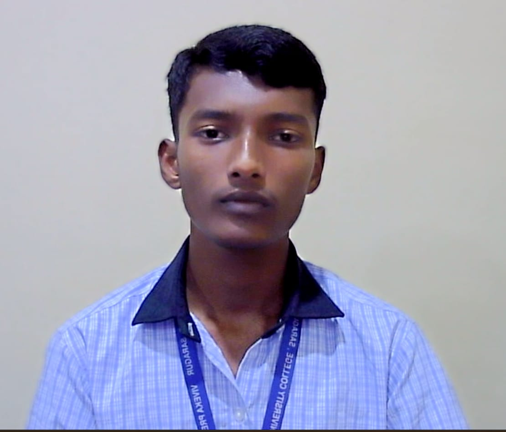

01 / EDTECH
VEES
An education platform concept for students preparing for KCET, JEE Main/Advanced, and NEET, with study planning and test-related features.
GITHUB PROFILE ↗Software Engineer / Web Developer — aspiring
To become a skilled software engineer and build useful technology for students and communities.
THE PERSON BEHIND THE PIXELS

Software Engineer / Web Developer — aspiring
Curious mind. Builder’s mindset. Always learning.
I am a Computer Science and Engineering student at RV College of Engineering, Bengaluru. I’m interested in software engineering, web development, and building education-focused tools that make learning easier for students.
THE FOUNDATION
RV College of Engineering (RVCE), Bengaluru, Karnataka.
Completed Pre-University Course with 97% in 2nd PUC.
Secured KCET Rank 705.
School education completed at MDRS, Kudige.
TOOLS IN THE TOOLKIT
Select a node to inspect the skills you provided.
SELECTED CAPABILITY
HTML and CSS.
Only add proficiency levels or detailed claims you can demonstrate.
LEARNING THROUGH MAKING
Project descriptions below are based on the names and purposes previously discussed. Update status and links to match what is completed.
An education platform concept for students preparing for KCET, JEE Main/Advanced, and NEET, with study planning and test-related features.
GITHUB PROFILE ↗A rural employment platform concept intended to connect skilled and unskilled workers with job providers.
GITHUB PROFILE ↗A student-focused budgeting project, also referred to as PocketBook in project discussions.
GITHUB PROFILE ↗A smart-room project discussed with ESP8266/Arduino, sensors, LCD output, and Blynk monitoring.
GITHUB PROFILE ↗These are project summaries, not claims of professional experience. Add individual repository links and specify whether each project is completed, ongoing, or a concept.
MILESTONES & LEARNING
Academic result supplied by Varun.
Certification/course supplied by Varun. Provider and completion date not provided.
Languages supplied by Varun.
THE PORTAL IS OPEN
Software development • Educational technology • Problem solving